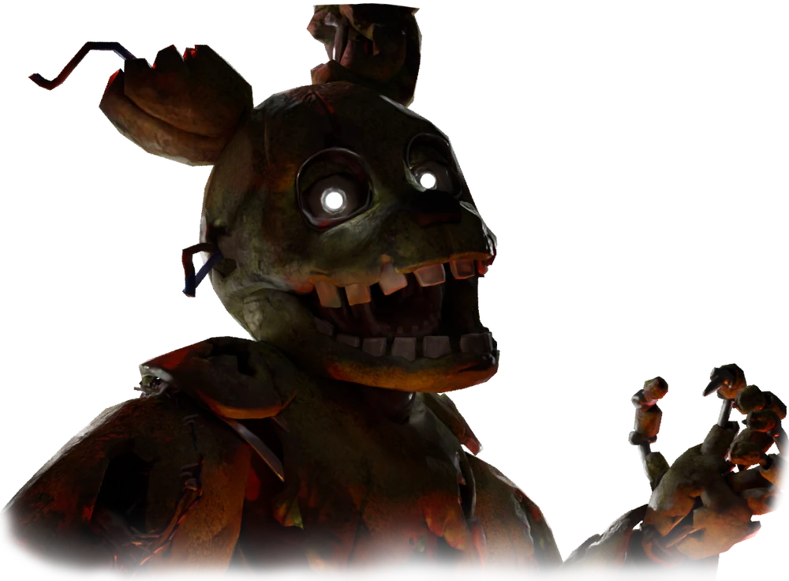

There are currently three playable killers as of now in Bite by Night. One coming in the 30th of May and 3 more on the way confirmed by the developers.
The Rotten

"I always come back"
The Rotten is a decaying animatronic suit containing the remains of William Afton, the co-founder of Fazbear Entertainment. It is also the first killer new players start as.
The Project

"Why don't you trust me?"
The Project is a highly advanced program known as M2, capable of learning and imitating what it sees and hears, allowing it to fit into any character costume.
The Doppleganger

"You won't die"
The Doppelganger is an amalgamation of the inner components of the Funtime Animatronics (see aliases), formed to escape the underground facility where they were trapped.
Upcoming Killer
The Puppet

"Shhh..."
Marionette, also known as Puppet, Charlotte Emily, or simply Charlie, is planned to be the next and fourth killer in Bite By Night. They will be released on May 30th (May 31st for some people).